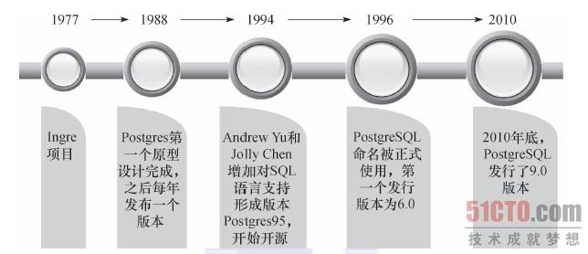
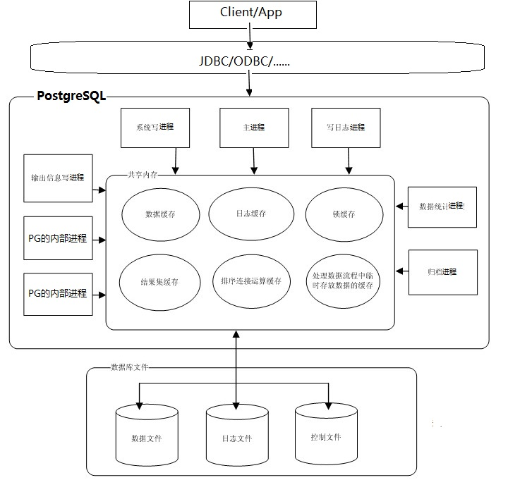

Postgre数据库简介

简介
PostgreSQL是自由的对象-关系型数据库服务器（数据库管理系统）
发展流程:

PostgreSQL 的前身是 BSD 的始于 1977 年的 Ingres 项目，82年，项目领导人Michael Stonebraker 将其商业化。85年正式更名为Postgres。
92年两名伯克利的研究生在做研究生课题的时候，用SQL92替换了原有的Postquel作为查询语言，并将其更名为Postgres95。
96年，一群黑客们接手了Postgres95，开始修改及稳定它的代码，并与同年8月发布了第一个开源版本，将其更名为PostgreSQL。
PG支持的数据类型非常丰富，他支持任意精度的数值类型，无限长度的文本类型，同时具有一些nosql的特性，也可以存储hash表（hstore），ltree树状结构，支持jsonb、xml、array的存储和操作。同时PG提供了对IP地址和地理信息的良好支持。
PG支持的语言非常多，各种脚本语言，例如：Lua、Perl、Python、Ruby等，也支持各种编译语言，如c、c++和JAVA等，对统计语言R也有良好的支持。
架构图：

图片来自
https://wiki.postgresql.org/wiki/%E6%95%B0%E6%8D%AE%E5%BA%93%E5%AF%B9%E6%AF%94
PostgreSQL采用的是C/S结构，一个客户端对应一个服务器端的守护进程(开销会略大)
安装
参考官网：https://www.postgresql.org/download/
也可以参考阮一峰老师的这篇 PostgreSQL新手入门
使用
psql – PostgreSQL的交互式终端的使用
详细请参见 psql
登录到数据库，类似mysql1
psql -U dbuser -d exampledb -h 127.0.0.1 -p 5432
-U指定用户，-d指定数据库，-h指定服务器，-p指定端口。
| 命令 | 作用 |
|---|---|
| \h | 查看SQL命令的解释，比如\h select。 |
| \? | 查看psql命令列表。 |
| \l | 列出所有数据库。 |
| \c [database_name]： | 连接其他数据库。 |
| \d | 列出当前数据库的所有表格。 |
| \d [table_name]： | 列出某一张表格的结构。 |
| \di | 查看索引 |
| \du | 列出所有用户。 |
| \e | 打开文本编辑器。 |
| \! pwd | 显示当前工作目录 |
| \q | 退出交互shell |
| \conninfo | 列出当前数据库和连接的信息。 |
1 | exampledb=> \d 关联列表 架构模式 | 名称 | 类型 | 拥有者 ----------+----------+--------+-------- public | user_tbl | 数据表 | dbuser (1 行记录) exampledb=> \l 数据库列表 名称 | 拥有者 | 字元编码 | 校对规则 | Ctype | 存取权限 -----------+----------+----------+--------------------------------+--------------------------------+----------------------- exampledb | dbuser | UTF8 | Chinese (Simplified)_China.936 | Chinese (Simplified)_China.936 | =Tc/dbuser + | | | | | dbuser=CTc/dbuser postgres | postgres | UTF8 | Chinese (Simplified)_China.936 | Chinese (Simplified)_China.936 | template0 | postgres | UTF8 | Chinese (Simplified)_China.936 | Chinese (Simplified)_China.936 | =c/postgres + | | | | | postgres=CTc/postgres template1 | postgres | UTF8 | Chinese (Simplified)_China.936 | Chinese (Simplified)_China.936 | =c/postgres + | | | | | postgres=CTc/postgres (4 行记录) exampledb=> \du 角色列表 角色名称 | 属性 | 成员属于 ----------+--------------------------------------------+---------- dbuser | | {} postgres | 超级用户, 建立角色, 建立 DB, 复制, 绕过RLS | {} exampledb=> \dt 关联列表 架构模式 | 名称 | 类型 | 拥有者 ----------+----------+--------+-------- public | user_tbl | 数据表 | dbuser (1 行记录) exampledb=> \d user_tbl; 数据表 "public.user_tbl" 栏位 | 类型 | 修饰词 -------------+-----------------------+-------- name | character varying(20) | signup_date | date | |